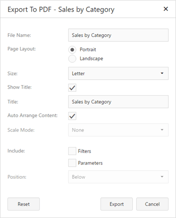

Exporting
The Web Dashboard allows you to export individual dashboard items, or the entire dashboard. To learn more about exporting concepts common to all dashboard items, see the Exporting topic.
This topic describes the specifics of exporting a Card dashboard item.
Export To PDF

- File Name - Specifies the name of the exported PDF file.
- Page Layout - Specifies the page orientation used to export a dashboard item.
- Size - Specifies the standard paper size.
- Show Title - Specifies whether or not to apply the dashboard item caption to the exported document title.
- Title - Specifies the title of the exported document.
- Auto Arrange Content - Specifies whether cards are arranged automatically in the exported document.
- Scale Mode - Specifies the mode for scaling when exporting a dashboard item.
- Include | Filters - Allows you to include master filter values to the exported document.
- Include | Parameters - Allows you to include parameter values to the exported document.
- Position - Specifies the position of the master filter and parameter values in the exported document. You can select between Below and Separate Page.
Specify the required options in this dialog and click the Export button to export the Card dashboard item. To reset changes to the default values, click the Reset button.
Export To Image
All data-bound dashboard items provide the same set of options when exporting them to an Image format. The following options are available:

- File Name - Specifies the name of the exported Image file.
- Show Title - Specifies whether or not to apply the dashboard item caption to the exported document title.
- Title - Specifies the title of the exported document.
- Image Format - Specifies the image format in which the dashboard item is exported.
- Resolution (dpi) - Specifies the resolution (in dpi) used to export a dashboard item.
- Include | Filters - Allows you to include master filter values to the exported document.
- Include | Parameters - Allows you to include parameter values to the exported document.
Specify the required options in this dialog and click the Export button to export the dashboard item. To reset changes to the default values, click the Reset button.
Export To Excel
Data visualized within all data-bound dashboard items can be exported to the required Excel format. The following options are available:

- File Name - Specifies the name of the exported Excel file.
- Excel Format - Specifies the Excel format in which the dashboard item is exported. You can use the XLSX, XLS or CSV formats.
- Separator - Specifies the string used to separate values in the exported CSV document.
- Include | Filters - Allows you to include master filter values to the exported document.
- Include | Parameters - Allows you to include parameter values to the exported document.
- Position - Specifies the position of the master filter and parameter values in the exported document. You can select between Below and Separate Sheet.
Specify the required options in this dialog and click the Export button to export the dashboard item. To reset changes to the default values, click the Reset button.